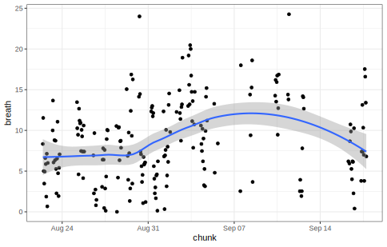
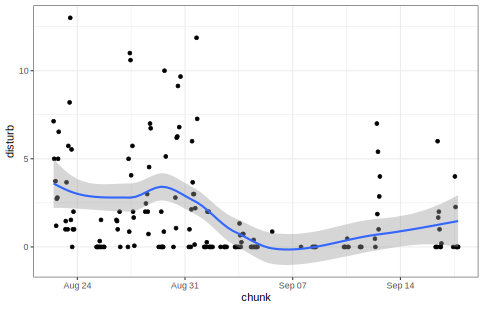

🖂 с.н.с. ИПЭЭ РАН
🖂 с.н.с. ИПЭЭ РАН Результаты предварительного анализа здесь. Важно: в том документе рисунки на полях подцепляются из этого анализа.
Выяснить, влияют ли развлечения двуногих на поведение китов, и есть ли какие-нибудь другие закономерности по наблюдениям.
Рисунок 1 Регион исследований
Рисунок 2 Календарь освещенности для бух. Врангеля Оффлайн калькулятор sunwait v0.1.
Не проводилось
Следующие действия осуществлялись после каждого чтения без осуществления записи на диск
Значения столбцов «BL», «BC» и «BR» по «Выдохи китов» просуммированы и записаны в новый столбец «breath».
Значения столбцов «CL», «CC» и «CR» по первой методике «Спокойные» просуммированы и записаны в новый столбец «calm1».
Значения столбцов «DL», «DC» и «DR» по второй методике «Спокойные» просуммированы и записаны в новый столбец «calm2».
Значения столбцов «EL», «EC» и «ER» по «Люди на воде (сап, лодка и тп все)» просуммированы и записаны в новый столбец «disturb».
Значения столбцов «FL», «FC» и «FR» по «Включенный мотор (только лодки)» просуммированы и записаны в новый столбец «motor».
Значения столбцов «GL», «GC» и «GR» по «Включенный мотор КАТАМАРАНЫ» просуммированы и записаны в новый столбец «strong».
По столбцу «Возмущение» создан новый номинальный столбец «pertrub» с двумя категориями: ячейка «Возмущение» пустая и ячейка «Возмущение» не пустая
По столбцу «Бофорт» создан новый номинальный столбец «beaufort» с теми же значениями.
По столбцу «Видимость» создан новый номинальный столбец «visibility» с теми же значениями.
По столбцам «Дата», «Время» и «Минута» создан новый столбец «time», в котором указано время первой минуты дежурства наблюдателя.
В столбце «Облачность, %» значения, меньшие чем 10, умножены на 10 и записаны в новый столбец «cloudness».
Осуществлено агрегирование данных по дежурствам:
Использованы столбцы “BL», «BC», «BR», «CL», «CC», «CR», «DL», «DC», «DR»,”EL», «EC», «ER», «FL», «FC», «FR», «GL», «GC», «GR», «PL», «PC», «PR», «breath», «calm1», «calm2», ,«disturb», «pertrub», «motor», «paddle», «strong», ,«beaufort», «visibility», «cloudness» ,«Наблюдатель».
Для числовых атрибутов происходило усреднение; таким образом, получалось число событий в минуту
Для номинальных атрибутов определялась мода; мультимодальных случаев не отмечено
В новой таблице идентификация по столбцу «chunk», в котором записана первая минута дежурства.
После агрегирования получена таблица, в которой количество строк: 158.
Рисунок 3 Выдохи по дежурствам. Loess-сглаживание (Cleveland and Devlin, 1988) с параметром span=0.25
Для сравнения, сглаживание с параметром span=0.75

Рисунок 4 Лодки по дежурствам. Loess-сглаживание (Cleveland and Devlin, 1988) с параметром span=0.25
много лодок в субботу 12 сентября
Для сравнения, сглаживание с параметром span=0.75

Рисунок 5 Статистика по выдохам в секторах BL, BC, BR для всего исследуемого периода. Медианы: BL=2.2, BC=3.1, BR=0.43. Средние: BL=3.08, BC=4.08, BR=1.66.
Рисунок 6 Статистика по спокойным (методика 1) в секторах CL, CC, CR для всего исследуемого периода. Медианы: CL=0.07, CC=0.07, CR=0. Средние: CL=0.13, CC=0.12, CR=0.14.
Рисунок 7 Статистика по спокойным (методика 2) в секторах DL, DC, DR для всего исследуемого периода. Медианы: DL=0.27, DC=0.13, DR=0. Средние: DL=0.45, DC=0.38, DR=0.17.
Рисунок 8 Статистика по лодкам в секторах EL, EC, ER для всего исследуемого периода. Медианы: EL=0, EC=0, ER=0. Средние: EL=0.81, EC=0.75, ER=0.38.
Рисунок 9 Статистика по лодкам с мотором в секторах FL, FC, FR для всего исследуемого периода. Медианы: FL=0, FC=0, FR=0. Средние: FL=0.03, FC=0.03, FR=0.02.
Рисунок 10 Статистика по лодкам без мотора в секторах PL, PC, PR для всего исследуемого периода. Медианы: PL=0, PC=0, PR=0. Средние: PL=0.78, PC=0.72, PR=0.36.
Рисунок 11 Статистика по большим катамаранам в секторах GL, GC, GR для всего исследуемого периода. Медианы: GL=0, GC=0, GR=0. Средние: GL=0, GC=0.01, GR=0.
По рис. 4 с начала сентября проглядывается спад в беспокойстве, поэтому попробуем разбить на два интервала с использованием непараметрической сегментации (Lavielle, 1999; Lavielle, 2005) по среднему значению.
| From | To | Length | Mean | St.dev | |
|---|---|---|---|---|---|
| more | 2020-08-22 11:00:00 | 2020-08-31 19:00:00 | 83 | 3.09 | 3.28 |
| less | 2020-09-01 06:00:00 | 2020-09-17 18:00:00 | 75 | 0.66 | 1.43 |
Рисунок 12 Сравнение частоты регистрации лодок для различных периодов туристической активности
Ожидаемо высокие значения парных тестов по беспокойству: t=6.1, df=114.6, p.value<0.0001 (Welch Two Sample t-test) и W=4823.5, p.value<0.0001 (Wilcoxon rank sum test with continuity correction).
Рисунок 13 Сравнение частоты регистрации выдохов для различных периодов туристической активности
Посмотрим, будут ли различия в средних для выдохов, разбитых на те же группы по уровню беспокойства: t=-5.0, df=145.7, p.value<0.0001 (Welch Two Sample t-test) и W=1807.5, p.value<0.0001 (Wilcoxon rank sum test with continuity correction). Отличия (рис. 13) не такие сильные (как на рис. 12), но они есть: в сентябре, при спаде турпотока, средняя частота регистрируемых выдохов в минуту изменилась c 7 до 11. Построим непараметрическую сегментацию на два интервала и для частоты регистрируемых выдохов в минуту (таб. 2).
| From | To | Length | Mean | St.dev | |
|---|---|---|---|---|---|
| less | 2020-08-22 11:00:00 | 2020-09-01 15:00:00 | 91 | 7.22 | 3.86 |
| more | 2020-09-01 17:00:00 | 2020-09-17 18:00:00 | 67 | 11.01 | 4.80 |
Видим, что для интервалы для лодок (таб. 1) и выдохов (таб. 2) почти одинаковая, и смена интервалов расходится лишь на несколько часов. При долгосрочных наблюдениях при снижении лодочной активности увеличение частоты регистрируемых выдохов произошло через несколько часов.
Рисунок 14 Статистика по выдохам в секторах BL, BC, BR для высокой лодочной активности. Медианы: BL=2.07, BC=2.27, BR=0.33. Средние: BL=2.7, BC=3.11, BR=1.36.
Рисунок 15 Статистика по спокойным (методика 1) в секторах CL, CC, CR для высокой лодочной активности. Медианы: CL=0.07, CC=0.07, CR=0. Средние: CL=0.13, CC=0.12, CR=0.14.
Рисунок 16 Статистика по спокойным (методика 2) в секторах DL, DC, DR для высокой лодочной активности. Медианы: DL=0.27, DC=0.07, DR=0. Средние: DL=0.34, DC=0.38, DR=0.14.
Рисунок 17 Статистика по лодкам в секторах EL, EC, ER для высокой лодочной активности. Медианы: EL=0, EC=0.67, ER=0. Средние: EL=1.12, EC=1.33, ER=0.64.
Рисунок 18 Статистика по лодкам с мотором в секторах FL, FC, FR для высокой лодочной активности. Медианы: FL=0, FC=0, FR=0. Средние: FL=0.01, FC=0.04, FR=0.03.
Рисунок 19 Статистика по лодкам без мотора в секторах PL, PC, PR для высокой лодочной активности. Медианы: PL=0, PC=0.47, PR=0. Средние: PL=1.1, PC=1.29, PR=0.62.
Рисунок 20 Статистика по выдохам в секторах BL, BC, BR для низкой лодочной активности. Медианы: BL=2.67, BC=4.13, BR=0.47. Средние: BL=3.51, BC=5.15, BR=2.
Рисунок 21 Статистика по спокойным (методика 1) в секторах CL, CC, CR для низкой лодочной активности. Медианы: CL=NA, CC=NA, CR=NA. Средние: CL=NaN, CC=NaN, CR=NaN.
Рисунок 22 Статистика по спокойным (методика 2) в секторах DL, DC, DR для низкой лодочной активности. Медианы: DL=0.33, DC=0.13, DR=0. Средние: DL=0.5, DC=0.39, DR=0.19.
Рисунок 23 Статистика по лодкам в секторах EL, EC, ER для низкой лодочной активности. Медианы: EL=0, EC=0, ER=0. Средние: EL=0.48, EC=0.1, ER=0.09.
Рисунок 24 Статистика по лодкам с мотором в секторах FL, FC, FR для низкой лодочной активности. Медианы: FL=0, FC=0, FR=0. Средние: FL=0.05, FC=0.02, FR=0.02.
Рисунок 25 Статистика по лодкам без мотора в секторах PL, PC, PR для низкой лодочной активности. Медианы: PL=0, PC=0, PR=0. Средние: PL=0.43, PC=0.08, PR=0.07.
Исследовали линейные модели и обобщенные линейные модели. Переменные в номинальной шкале преобразовывались в интервальную шкалу по порядковому номеру номеру класса (в сводке это фигурирует как as.integer), и к преобразованным переменным могло применяться экспонирование exp() и логарифмирование log(). Исходные номинальные переменные без преобразования также рассматривались.
Cводный результат влияния условий окружающей среды на лодочную активность:
Call:
lm(formula = disturb ~ (as.integer(beaufort)) + (as.integer(cloudness)),
data = b)
Residuals:
Min 1Q Median 3Q Max
-4.6651 -1.6664 -0.4829 1.1364 9.2927
Coefficients:
Estimate Std. Error t value Pr(>|t|)
(Intercept) 8.72860 1.11262 7.845 7.95e-13 ***
as.integer(beaufort) -2.09109 0.39444 -5.301 4.10e-07 ***
as.integer(cloudness) -0.19724 0.05311 -3.714 0.000288 ***
---
Signif. codes: 0 '***' 0.001 '**' 0.01 '*' 0.05 '.' 0.1 ' ' 1
Residual standard error: 2.559 on 148 degrees of freedom
(7 observations deleted due to missingness)
Multiple R-squared: 0.2219, Adjusted R-squared: 0.2114
F-statistic: 21.1 on 2 and 148 DF, p-value: 8.662e-09Чем меньше волны, тем больше лодок. Чем меньше облаков, тем больше лодок.
Call:
lm(formula = disturb ~ (as.integer(beaufort)) + (as.integer(cloudness)) +
exp(as.integer(visibility)), data = b)
Residuals:
Min 1Q Median 3Q Max
-4.1843 -1.6463 -0.7868 1.1272 9.0555
Coefficients:
Estimate Std. Error t value Pr(>|t|)
(Intercept) 10.09665 1.27805 7.900 6.00e-13 ***
as.integer(beaufort) -2.13071 0.39041 -5.458 2.00e-07 ***
as.integer(cloudness) -0.23987 0.05628 -4.262 3.61e-05 ***
exp(as.integer(visibility)) -0.07025 0.03342 -2.102 0.0372 *
---
Signif. codes: 0 '***' 0.001 '**' 0.01 '*' 0.05 '.' 0.1 ' ' 1
Residual standard error: 2.53 on 147 degrees of freedom
(7 observations deleted due to missingness)
Multiple R-squared: 0.2446, Adjusted R-squared: 0.2292
F-statistic: 15.87 on 3 and 147 DF, p-value: 5.461e-09Также рассмотрено включение дополнительного коэффициента exp(as.integer(visibility)). Он также значимый, но его сложнее объяснить, так как чем лучше видимость, тем меньше лодок. Модель также улучшается.
Не удалось обнаружить какого-либо влияния облачности, ветра, видимости на частоту регистрируемых выдохов.
Здесь определили логическую переменную boat, которая принимает истинное значение (TRUE), если за дежурство фиксировалось как минимум одно судно, и ложное значение (FALSE), если за дежурство не отмечено никакого беспокойства лодками.
Call:
lm(formula = breath ~ boat, data = b)
Residuals:
Min 1Q Median 3Q Max
-9.5923 -2.9097 -0.0288 2.8712 13.3411
Coefficients:
Estimate Std. Error t value Pr(>|t|)
(Intercept) 10.9256 0.5169 21.138 < 2e-16 ***
boatTRUE -3.7301 0.6887 -5.416 2.26e-07 ***
---
Signif. codes: 0 '***' 0.001 '**' 0.01 '*' 0.05 '.' 0.1 ' ' 1
Residual standard error: 4.293 on 156 degrees of freedom
Multiple R-squared: 0.1583, Adjusted R-squared: 0.1529
F-statistic: 29.34 on 1 and 156 DF, p-value: 2.26e-07То же самое, но независимая переменная выглядит как disturb > 0TRUE
Call:
lm(formula = breath ~ (disturb > 0), data = b)
Residuals:
Min 1Q Median 3Q Max
-9.5923 -2.9097 -0.0288 2.8712 13.3411
Coefficients:
Estimate Std. Error t value Pr(>|t|)
(Intercept) 10.9256 0.5169 21.138 < 2e-16 ***
disturb > 0TRUE -3.7301 0.6887 -5.416 2.26e-07 ***
---
Signif. codes: 0 '***' 0.001 '**' 0.01 '*' 0.05 '.' 0.1 ' ' 1
Residual standard error: 4.293 on 156 degrees of freedom
Multiple R-squared: 0.1583, Adjusted R-squared: 0.1529
F-statistic: 29.34 on 1 and 156 DF, p-value: 2.26e-07Отрицательное значение коэффициента означает негативное влияние на частоту регистрируемых выдохов. Ниже приведена сводка по линейной модели, в которой возмущение использовалось как есть, т. е., количество зафиксированных лодок в минуту disturb.
Call:
lm(formula = breath ~ disturb, data = b)
Residuals:
Min 1Q Median 3Q Max
-8.7129 -3.2129 0.1507 3.0734 14.2204
Coefficients:
Estimate Std. Error t value Pr(>|t|)
(Intercept) 10.0462 0.4164 24.124 < 2e-16 ***
disturb -0.6303 0.1213 -5.197 6.27e-07 ***
---
Signif. codes: 0 '***' 0.001 '**' 0.01 '*' 0.05 '.' 0.1 ' ' 1
Residual standard error: 4.321 on 156 degrees of freedom
Multiple R-squared: 0.1476, Adjusted R-squared: 0.1421
F-statistic: 27 on 1 and 156 DF, p-value: 6.269e-07Здесь также отрицательный коэффициент предиктора “число лодок,” но R2 чуть хуже, чем для предиктора “число лодок”
Call:
lm(formula = breath ~ Наблюдатель, data = b)
Residuals:
Min 1Q Median 3Q Max
-9.4629 -3.3629 -0.3277 3.2538 14.8038
Coefficients:
Estimate Std. Error t value Pr(>|t|)
(Intercept) 9.4629 0.5569 16.993 <2e-16 ***
НаблюдательОльга Шпак -1.3538 1.5111 -0.896 0.372
НаблюдательСаня Соловова -1.1165 0.7694 -1.451 0.149
---
Signif. codes: 0 '***' 0.001 '**' 0.01 '*' 0.05 '.' 0.1 ' ' 1
Residual standard error: 4.659 on 155 degrees of freedom
Multiple R-squared: 0.01515, Adjusted R-squared: 0.002443
F-statistic: 1.192 on 2 and 155 DF, p-value: 0.3063
Call:
lm(formula = breath ~ strong, data = b)
Residuals:
Min 1Q Median 3Q Max
-8.9076 -3.2409 -0.2076 3.4257 15.3591
Coefficients:
Estimate Std. Error t value Pr(>|t|)
(Intercept) 8.9076 0.3709 24.018 <2e-16 ***
strong -7.5771 4.0507 -1.871 0.0633 .
---
Signif. codes: 0 '***' 0.001 '**' 0.01 '*' 0.05 '.' 0.1 ' ' 1
Residual standard error: 4.628 on 156 degrees of freedom
Multiple R-squared: 0.02194, Adjusted R-squared: 0.01567
F-statistic: 3.499 on 1 and 156 DF, p-value: 0.06328
Call:
lm(formula = breath ~ motor + paddle, data = b)
Residuals:
Min 1Q Median 3Q Max
-8.7941 -2.9915 0.0623 3.0559 14.1393
Coefficients:
Estimate Std. Error t value Pr(>|t|)
(Intercept) 10.1274 0.4222 23.987 < 2e-16 ***
motor -2.3113 1.4902 -1.551 0.123
paddle -0.5991 0.1243 -4.821 3.38e-06 ***
---
Signif. codes: 0 '***' 0.001 '**' 0.01 '*' 0.05 '.' 0.1 ' ' 1
Residual standard error: 4.317 on 155 degrees of freedom
Multiple R-squared: 0.1546, Adjusted R-squared: 0.1436
F-statistic: 14.17 on 2 and 155 DF, p-value: 2.235e-06Здесь видим, что коэффициент моторных лодок motor не значимый. Основной вклад вносят немоторные лодки paddle. Возможно, из-за того, что доля моторных лодок (ср. упоминание о средних значениях в подписях к рис. 9 по моторным лодкам и к рис. 10 по лодкам без мотора; отличаются более чем в двадцать раз).
Call:
lm(formula = breath ~ PL + PC + FR, data = b)
Residuals:
Min 1Q Median 3Q Max
-8.6401 -3.1734 0.0293 3.0394 14.2932
Coefficients:
Estimate Std. Error t value Pr(>|t|)
(Intercept) 9.9734 0.4068 24.519 < 2e-16 ***
PL -0.8153 0.2123 -3.840 0.000179 ***
PC -0.5114 0.2277 -2.246 0.026157 *
FR -6.6046 3.2186 -2.052 0.041862 *
---
Signif. codes: 0 '***' 0.001 '**' 0.01 '*' 0.05 '.' 0.1 ' ' 1
Residual standard error: 4.311 on 154 degrees of freedom
Multiple R-squared: 0.1624, Adjusted R-squared: 0.1461
F-statistic: 9.951 on 3 and 154 DF, p-value: 4.916e-06Здесь получается значимые воздействия немоторных лодок в левом секторе PL (наибольшая значимость), немоторных лодок в центральном секторе PC и моторных лодок в правом секторе FR. Коэффициенты отрицательные, то есть, чем больше фиксируется лодок, тем меньше фиксируется выдохов.
Call:
lm(formula = calm1 ~ motor + paddle, data = b0)
Residuals:
Min 1Q Median 3Q Max
-0.48408 -0.30258 -0.08333 0.22076 0.82573
Coefficients:
Estimate Std. Error t value Pr(>|t|)
(Intercept) 0.48408 0.06915 7.000 1.02e-08 ***
motor -0.17928 0.20078 -0.893 0.377
paddle -0.02813 0.01692 -1.663 0.103
---
Signif. codes: 0 '***' 0.001 '**' 0.01 '*' 0.05 '.' 0.1 ' ' 1
Residual standard error: 0.3565 on 45 degrees of freedom
(103 observations deleted due to missingness)
Multiple R-squared: 0.08426, Adjusted R-squared: 0.04356
F-statistic: 2.07 on 2 and 45 DF, p-value: 0.138Коэффициенты воздействия моторных лодок motor и немоторных лодок paddle не значимые.
Call:
lm(formula = calm1 ~ exp(as.integer(visibility)), data = b0)
Residuals:
Min 1Q Median 3Q Max
-0.48578 -0.26793 -0.07011 0.21094 0.78089
Coefficients:
Estimate Std. Error t value Pr(>|t|)
(Intercept) 0.141146 0.123427 1.144 0.259
exp(as.integer(visibility)) 0.017158 0.007712 2.225 0.031 *
---
Signif. codes: 0 '***' 0.001 '**' 0.01 '*' 0.05 '.' 0.1 ' ' 1
Residual standard error: 0.3501 on 46 degrees of freedom
(103 observations deleted due to missingness)
Multiple R-squared: 0.09714, Adjusted R-squared: 0.07752
F-statistic: 4.949 on 1 and 46 DF, p-value: 0.03105А здесь обнаруживается связь между хорошей видимостью (коэффициент положительный и значимый) и частотой регистрации спокойных выдохов по первой методике.
Call:
lm(formula = calm2 ~ boat + log(as.integer(beaufort)), data = b)
Residuals:
Min 1Q Median 3Q Max
-1.4345 -0.6524 -0.1819 0.3507 6.4820
Coefficients:
Estimate Std. Error t value Pr(>|t|)
(Intercept) 2.3832 0.4773 4.993 2.32e-06 ***
boatTRUE -1.0526 0.2202 -4.780 5.61e-06 ***
log(as.integer(beaufort)) -0.8636 0.4237 -2.038 0.044 *
---
Signif. codes: 0 '***' 0.001 '**' 0.01 '*' 0.05 '.' 0.1 ' ' 1
Residual standard error: 1.13 on 107 degrees of freedom
(48 observations deleted due to missingness)
Multiple R-squared: 0.1838, Adjusted R-squared: 0.1685
F-statistic: 12.05 on 2 and 107 DF, p-value: 1.912e-05Получается, чем больше присутствия лодок (не их количества, а именно есть/нет) и больше волны (значимость 94%), там меньше частота регистрации спокойных выдохов
Делали следущее:
Выявляли, влияет появление больших катамаранов на изменение частоты выдохов в течение одного держурства и через сколько минут. Не выявили.
Выявляли, в течение одного дежурства через сколько минут при появлении лодок изменяется частота выдохов. Не выявили.
Выявляли, насколько совокупные возмущения в первой половине дня влияют на совокупное число выдохов во второй половине дня.
Call:
lm(formula = breath ~ boat, data = lagged_noon(a, "13:30"))
Residuals:
Min 1Q Median 3Q Max
-288.88 -176.43 30.73 143.73 293.46
Coefficients:
Estimate Std. Error t value Pr(>|t|)
(Intercept) 648.093 90.032 7.199 3.08e-06 ***
boat -3.952 2.032 -1.945 0.0708 .
---
Signif. codes: 0 '***' 0.001 '**' 0.01 '*' 0.05 '.' 0.1 ' ' 1
Residual standard error: 204.3 on 15 degrees of freedom
Multiple R-squared: 0.2014, Adjusted R-squared: 0.1482
F-statistic: 3.783 on 1 and 15 DF, p-value: 0.07076Начало второй половины дня определено как 13:30. Чем больше лодок в первой половине дня, тем меньше выдохов во второй половине дня.
Для сравнения, начало второй половины дня в 12:30
Call:
lm(formula = breath ~ boat, data = lagged_noon(a, "12:30"))
Residuals:
Min 1Q Median 3Q Max
-413.74 -172.67 26.93 166.46 408.26
Coefficients:
Estimate Std. Error t value Pr(>|t|)
(Intercept) 683.741 79.203 8.633 2.04e-07 ***
boat -4.471 2.251 -1.986 0.0644 .
---
Signif. codes: 0 '***' 0.001 '**' 0.01 '*' 0.05 '.' 0.1 ' ' 1
Residual standard error: 232.6 on 16 degrees of freedom
Multiple R-squared: 0.1978, Adjusted R-squared: 0.1476
F-statistic: 3.945 on 1 and 16 DF, p-value: 0.06443Выявляли, насколько частота выдохов откликается на присутствие лодками несколькими часами ранее. Использовали таблицу с агрегированными по дежурствам данными.
Call:
lm(formula = breath ~ disturb > 0, data = lagged(b, lag = 4,
allow = 3.5))
Residuals:
Min 1Q Median 3Q Max
-8.2825 -2.6992 -0.2074 2.3446 10.6259
Coefficients:
Estimate Std. Error t value Pr(>|t|)
(Intercept) 10.5492 0.6114 17.256 < 2e-16 ***
disturb > 0TRUE -4.3085 0.8151 -5.286 8.1e-07 ***
---
Signif. codes: 0 '***' 0.001 '**' 0.01 '*' 0.05 '.' 0.1 ' ' 1
Residual standard error: 3.962 on 94 degrees of freedom
(62 observations deleted due to missingness)
Multiple R-squared: 0.2291, Adjusted R-squared: 0.2209
F-statistic: 27.94 on 1 and 94 DF, p-value: 8.103e-07Здесь каждому дежурству, из которого извлекалось беспокойство в виде наличия лодок (как здесь) или частоты регистрации лодок, ставилось в соответствие ближайшее дежурство спустя четыре часа и позднее (но не более 3.5 часов), из которого извлекась частота регистрации выдохов. Модель выглядит более-менее при лаге от 3 до 5 часов, но лучше всего при лаге 4 часа.